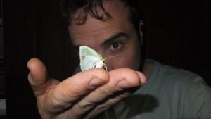
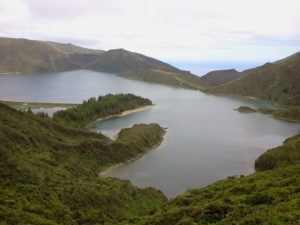

About me!

Hi there!
My name is Luis Cunha, I am a biologist with a passion for invertebrates, in particular, the humble earthworm!

I am an environmental biologist who became a bioinformatician led by the demands of personal research interests mainly towards invertebrate ecotoxicology, genomics and adaptations to extreme aquatic and terrestrial environments. My interest in biological sciences led me to pursue a degree in Biology in one of my favourite places on earth, the Azores Islands, Portugal. During my bachelor studies, I also had the opportunity to conduct research in the Mexican Caribbean region.
In September of 2005, I received an M.Sc. scholarship to attend the M.Sc. course in Shellfish Biology, Fisheries and Culture at Bangor University. By that time, I had become interested in questions about how organisms respond and adapt to stressful conditions, and I thought that the volcanic islands of Azores would be an appropriate "natural laboratory" to address such questions — leading to my PhD project, "The effects of extreme environments of volcanic origin in organisms using earthworms as models".
Lagoa do Fogo, São Miguel, Azores

My period at Cardiff University was marked by my involvement in post-doctoral research, and by my interaction with graduate and undergraduate students. The teaching experiences and workshops I organised have unambiguously underlined my commitment to pursuing an academic career.
Keep an eye on my blog and feel free to get in touch.
Luis